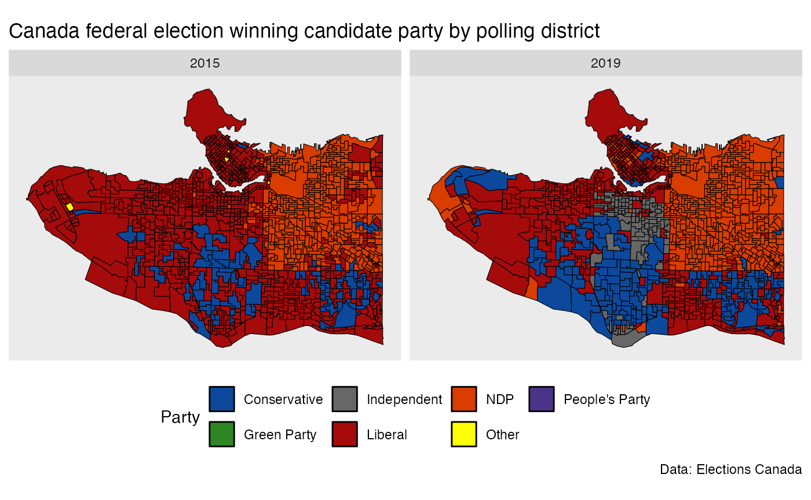
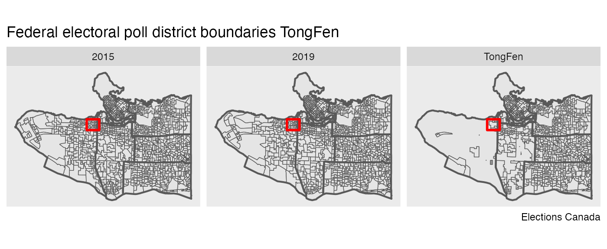
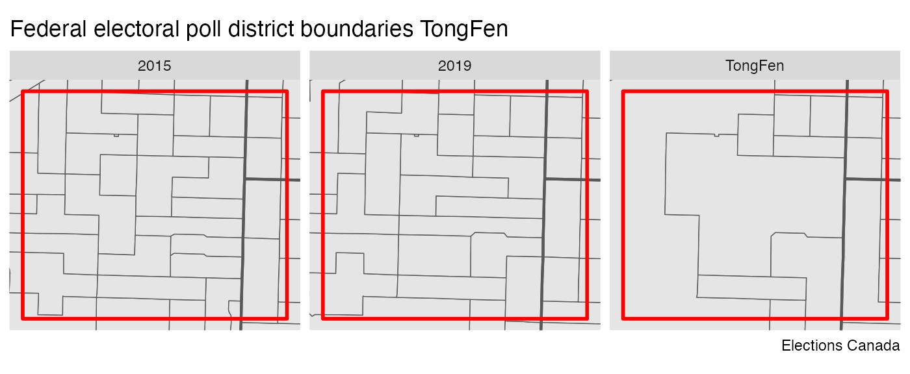
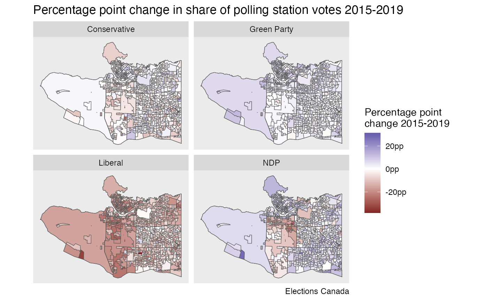
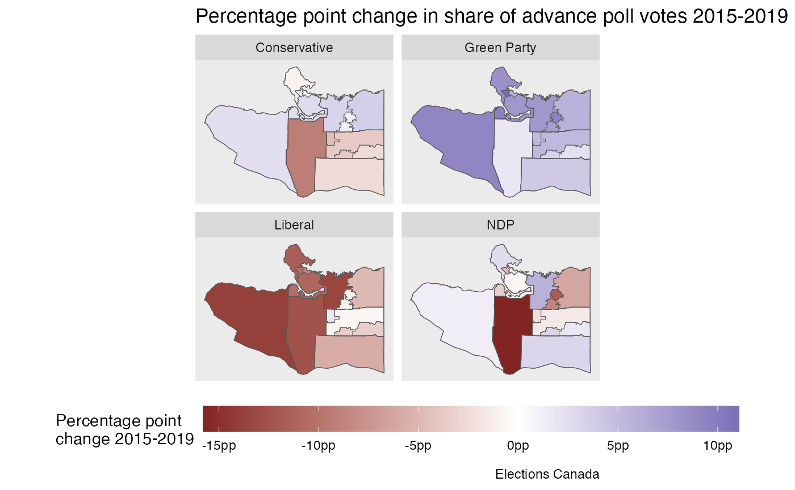

library(dplyr)
#>
#> Attaching package: 'dplyr'
#> The following objects are masked from 'package:stats':
#>
#> filter, lag
#> The following objects are masked from 'package:base':
#>
#> intersect, setdiff, setequal, union
library(ggplot2)
library(tidyr)
library(tongfen)
library(sf)
#> Linking to GEOS 3.13.0, GDAL 3.8.5, PROJ 9.5.1; sf_use_s2() is TRUEA common example where tongfen is useful is polling district level elections data. Polling district boundaries change over time depending on the number of registered voters in each polling district and other factors, but the geographic changes generally occur in a way that keeps districts roughly comparable. To compare data across elections we need to create a common geography. Semi-custom cross-tabulations to generate data on a common geography aren’t available for elections data for obvious reasons.
TongFen creates a common geography to make the voting data comparable through time on a common geography based on polling districts.
An alternative method to make data comparable is to use the
tongfen_estimate method to generate (dasymetric)
area-weighted interpolations of polling data on a common geography, but
that is likely to introduce systematic biases as density is a common
confounding factor of both, voting patterns and changes in polling
district geographies.
As an example we take data from the 2015 and 2019 Canadian federal elections in the Vancouver area. The package ships with the geographic and voting data.
data("vancouver_elections_data_2015",package="tongfen")
data("vancouver_elections_data_2019",package="tongfen")
data("vancouver_elections_geos_2015",package="tongfen")
data("vancouver_elections_geos_2019",package="tongfen")To start out we map the polling districts for the two years, coloured by the winning candidate’s party.
party_colours <- c(
"People's Party"="#4a3389",
Conservative="#0C499C",
"Bloc Québécois"="#02819E",
Liberal="#A50B0B",
NDP="#DA3D00",
"Green Party"="#2E8724",
"Independent"="#676767",
Other="yellow"
)
raw_vote_data <- bind_rows(
vancouver_elections_geos_2015 %>%
left_join(vancouver_elections_data_2015 %>%
group_by(PD_2015) %>%
top_n(1,Votes),by="PD_2015") %>%
mutate(Year="2015"),
vancouver_elections_geos_2019 %>%
left_join(vancouver_elections_data_2019 %>%
group_by(PD_2019) %>%
top_n(1,Votes),by="PD_2019") %>%
mutate(Year="2019")
) %>%
mutate(Party=case_when(grepl("NDP",Party) ~ "NDP",
Party %in% names(party_colours) ~ Party,
TRUE ~ "Other"))
#> Warning in sf_column %in% names(g): Detected an unexpected many-to-many relationship between `x` and `y`.
#> ℹ Row 167 of `x` matches multiple rows in `y`.
#> ℹ Row 651 of `y` matches multiple rows in `x`.
#> ℹ If a many-to-many relationship is expected, set `relationship =
#> "many-to-many"` to silence this warning.
#> Warning in sf_column %in% names(g): Detected an unexpected many-to-many relationship between `x` and `y`.
#> ℹ Row 9 of `x` matches multiple rows in `y`.
#> ℹ Row 105 of `y` matches multiple rows in `x`.
#> ℹ If a many-to-many relationship is expected, set `relationship =
#> "many-to-many"` to silence this warning.
ggplot(raw_vote_data) +
geom_sf(aes(fill=Party),size=0.2,color="black") +
facet_wrap("Year") +
scale_fill_manual(values=party_colours) +
theme(legend.position = "bottom") +
coord_sf(datum=NA) +
labs(title="Canada federal election winning candidate party by polling district",
caption = "Data: Elections Canada")
On inspection we notice that a lot of the voting district boundaries match up, but there are also clear differences, especially toward the west side of Vancouver. That makes it difficult to directly compare data and for example look at voter shift at fine geographies. To overcome this we compute the correspondence between the two geographies.
We need to specify the tolerance, in units of the projected data (metres in our case), up to which we want to call two geographic regions to be the same. Geographic data is messy, boundaries get refined over time, and it is not uncommon to see boundary shifts of a couple of metres that have little or no material effect on the data. Polling districts generally follow blocks, and we consider changes by 30 metres or less as insignificant.
correspondence <- estimate_tongfen_correspondence(
data = list(vancouver_elections_geos_2015,vancouver_elections_geos_2019),
geo_identifiers = c("PD_2015","PD_2019"),
method = "estimate",
tolerance = 30)
vote_data <- correspondence %>%
left_join(vancouver_elections_data_2019 %>% select(PD_2019,Party,Votes_2019=Votes),by="PD_2019") %>%
left_join(vancouver_elections_data_2015 %>% select(PD_2015,Party,Votes_2015=Votes),by=c("PD_2015","Party")) %>%
group_by(TongfenID,Party) %>%
summarize_at(vars(starts_with("Votes")),sum,na.rm=TRUE) %>%
group_by(TongfenID) %>%
mutate(Total_2019=sum(Votes_2019,na.rm=TRUE),
Total_2015=sum(Votes_2015,na.rm=TRUE)) %>%
mutate(Share_2015=Votes_2015/Total_2015,
Share_2019=Votes_2019/Total_2019) %>%
ungroup()
#> Warning in left_join(., vancouver_elections_data_2019 %>% select(PD_2019, : Detected an unexpected many-to-many relationship between `x` and `y`.
#> ℹ Row 1 of `x` matches multiple rows in `y`.
#> ℹ Row 4449 of `y` matches multiple rows in `x`.
#> ℹ If a many-to-many relationship is expected, set `relationship =
#> "many-to-many"` to silence this warning.
#> Warning in left_join(., vancouver_elections_data_2015 %>% select(PD_2015, : Detected an unexpected many-to-many relationship between `x` and `y`.
#> ℹ Row 186 of `x` matches multiple rows in `y`.
#> ℹ Row 45 of `y` matches multiple rows in `x`.
#> ℹ If a many-to-many relationship is expected, set `relationship =
#> "many-to-many"` to silence this warning.
base_geo <- vancouver_elections_geos_2019 %>%
left_join(correspondence,by=c("PD_2019")) %>%
group_by(TongfenID) %>%
summarise()
#> Warning in sf_column %in% names(g): Detected an unexpected many-to-many relationship between `x` and `y`.
#> ℹ Row 20 of `x` matches multiple rows in `y`.
#> ℹ Row 22 of `y` matches multiple rows in `x`.
#> ℹ If a many-to-many relationship is expected, set `relationship =
#> "many-to-many"` to silence this warning.
focus_area <- base_geo[base_geo$TongfenID=="59039_51",]
bbox <- focus_area %>% st_buffer(200) %>% st_bbox() %>% st_as_sfc()
compare_geos <- rbind(vancouver_elections_geos_2015 %>% mutate(type="2015") %>% select(type) ,#%>% st_transform(4326),
vancouver_elections_geos_2019 %>% mutate(type="2019") %>% select(type) ,#%>% st_transform(4326),
base_geo %>% mutate(type="TongFen") %>% select(type)) #%>% st_transform(4326)) %>%
ridings <- vancouver_elections_geos_2019 %>%
group_by(FED_NUM) %>%
summarize(.groups="drop")
ggplot(compare_geos) +
facet_wrap("type") +
geom_sf(size=0.25) +
geom_sf(data=ridings,size=0.75,fill=NA) +
geom_sf(data=bbox,color="red",fill=NA,size=1) +
coord_sf(datum = NA) +
labs(title="Federal electoral poll district boundaries TongFen",caption="Elections Canada")
We notice that the TongFen geometry results in a fairly granular tiling on the east side, and a very coarse geometry on the west. This could likely be improved by cutting out park areas and other areas known not to contain population, just like one would do when using dasymetric area-weighted interpolation. Another option is to check if larger tolerance would still result in satisfactory identification of geographies that haven’t had substantial changes.
To better understand TongFen works we can zoom into the red rectangle and investigate how areas are joined up in the process.
bb <- st_bbox(bbox)
ggplot(compare_geos) +
facet_wrap("type") +
geom_sf(size=0.25) +
geom_sf(data=ridings,size=0.75,fill=NA) +
geom_sf(data=bbox,color="red",fill=NA,size=1) +
coord_sf(datum = NA, xlim=c(bb$xmin,bb$xmax),ylim=c(bb$ymin,bb$ymax)) +
labs(title="Federal electoral poll district boundaries TongFen",caption="Elections Canada")
Armed with this data we can now easily compute vote change patterns at the harmonized polling district level.
main_parties <- c("Liberal","Conservative","Green Party","NDP-New Democratic Party")
plot_data <- base_geo %>%
left_join(vote_data %>%
filter(Party %in% main_parties) %>%
mutate(Party=recode(Party,"NDP-New Democratic Party"="NDP")),
by="TongfenID")
plot_data2 <- vancouver_elections_geos_2019 %>%
group_by(FED_NUM) %>%
summarize(.groups="drop")
plot_data %>%
ggplot(aes(fill=Share_2019-Share_2015)) +
#mountainmathHelpers::geom_water() +
geom_sf(size=0.01) +
geom_sf(data=plot_data2,size=0.5,fill=NA) +
scale_fill_gradient2(labels=function(d)scales::percent(d,suffix="pp")) +
facet_wrap("Party") +
coord_sf(datum = NA) +
labs(title="Percentage point change in share of polling station votes 2015-2019",
fill="Percentage point\nchange 2015-2019", caption="Elections Canada")
The information is less informative on the west side, but in the other areas it shows voter shifts to and from each party. Notably, the middle area saw vote losses for all parties, maybe with exception of the Green party. That district saw a former Liberal incumbent candidate run as an independent, taking many Liberal votes with her but likely also attracting votes from former NDP and Conservative supporters. To get more definite estimates we could run an ecological inference model to better understand these vote shifts.
This data misses the voters voting in advanced polling (and those voting by mail), these should be included in a more thorough analysis. The advanced polling stations do have a geographic component, so we will quickly add these in. Essentially, advanced polling station group a number of electoral districts.
correspondence2 <- estimate_tongfen_correspondence(
data = list(vancouver_elections_geos_2015,vancouver_elections_geos_2019),
geo_identifiers = c("AP_2015","AP_2019"),
method = "estimate",
tolerance = 30)
advance_votes_data <- correspondence2 %>%
left_join(vancouver_elections_data_2019 %>% select(AP_2019=PD_2019,Party,Votes_2019=Votes),by="AP_2019") %>%
left_join(vancouver_elections_data_2015 %>% select(AP_2015=PD_2015,Party,Votes_2015=Votes),by=c("AP_2015","Party")) %>%
group_by(TongfenID,Party) %>%
summarize_at(vars(starts_with("Votes")),sum,na.rm=TRUE) %>%
group_by(TongfenID) %>%
mutate(Total_2019=sum(Votes_2019,na.rm=TRUE),
Total_2015=sum(Votes_2015,na.rm=TRUE)) %>%
mutate(Share_2015=Votes_2015/Total_2015,
Share_2019=Votes_2019/Total_2019) %>%
ungroup()
#> Warning in left_join(., vancouver_elections_data_2019 %>% select(AP_2019 = PD_2019, : Detected an unexpected many-to-many relationship between `x` and `y`.
#> ℹ Row 1 of `x` matches multiple rows in `y`.
#> ℹ Row 3825 of `y` matches multiple rows in `x`.
#> ℹ If a many-to-many relationship is expected, set `relationship =
#> "many-to-many"` to silence this warning.
advanced_base_geo <- vancouver_elections_geos_2019 %>%
left_join(correspondence2,by=c("AP_2019")) %>%
group_by(TongfenID) %>%
summarise()
#> Warning in sf_column %in% names(g): Detected an unexpected many-to-many relationship between `x` and `y`.
#> ℹ Row 12 of `x` matches multiple rows in `y`.
#> ℹ Row 14 of `y` matches multiple rows in `x`.
#> ℹ If a many-to-many relationship is expected, set `relationship =
#> "many-to-many"` to silence this warning.
plot_data <- advanced_base_geo %>%
left_join(advance_votes_data %>%
filter(Party %in% main_parties) %>%
group_by(TongfenID) %>%
complete(Party=main_parties,fill=list(Share_2015=0,Share_2019=0)) %>%
mutate(Party=recode(Party,"NDP-New Democratic Party"="NDP")),
by="TongfenID")
plot_data %>%
ggplot(aes(fill=Share_2019-Share_2015)) +
geom_sf(size=0.1) +
geom_sf(data=ridings,size=0.5,fill=NA) +
scale_fill_gradient2(labels=function(d)scales::percent(d,suffix="pp")) +
theme(legend.position="bottom", legend.key.width = unit(2.5, "cm")) +
facet_wrap("Party") +
coord_sf(datum=NA) +
labs(title="Percentage point change in share of advance poll votes 2015-2019",
fill="Percentage point\nchange 2015-2019",
caption="Elections Canada")